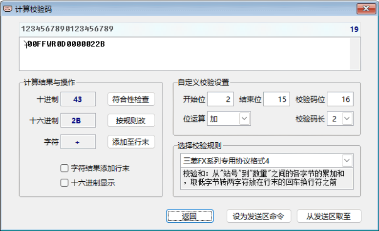

计算通讯命令校验码
在主界面中点击【计算校验码】，将弹出下面“计算校验码”窗口。
窗口上部编辑区中的内容开始时是装入主界面发送区的内容，可以进行修改、输入或粘贴等操作。
“□十六进制显示” ——勾选时编辑区字串以十六进制显示，取消时以 ASCII 码显示。 十六进制显示时，每一个字符是用2个十六进制数表示，用1个空格分隔。例如：ASCII 码字符“abcd”，十六进制显示时是“61 62 63 64 ”。
计算通讯命令校验码的一般步骤
1. 在编辑区中修改好所需命令内容；
2. 选择校验规则，规则设有“自定义校验”、“CRC16”、“三菱FX系列专用协议格式4”等；
3. 若选择“自定义校验”规则，则应先设置好用于计算校验码所需的开始位、结束位、校验码位、位运算（“加、减、与、或、异或”五种逻辑运算之一）、校验码长度（1或2位）；
4. 查看计算结果，点击【符合性检查】核对校验情况；
5. 点击【按规则改】、【添加至行末】之一，将会用计算结果修改编辑区中命令字串数据；
6. 点击【设为发送区命令】 ，即用当前编辑区的命令字符串替换主界面发送区中的内容；
7. 返回主界面。
编辑区上方的数字标尺，便于准确定位编辑区中通讯命令字符串各字符的位置。
